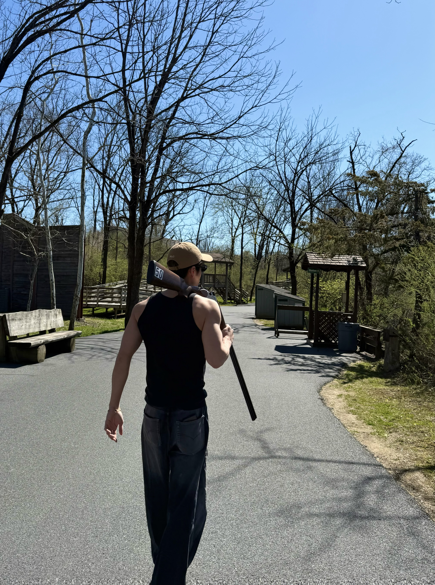

One memorable experience I have had was trying shooting at a
supervised shooting range. It was a new activity for me because
it required concentration, patience, and close attention to
safety instructions. I found it interesting to try something
unfamiliar in a responsible environment.

A memorable experience at a supervised shooting range.
Going to a Concert
Another memorable experience for me was attending a live
concert. I enjoyed listening to music in person and feeling the
energy created by the performers and the audience. Live music
made the experience exciting and meaningful.
Enjoying the atmosphere of a live concert.
One place where people can discover live musical performances is
Carnegie Hall.